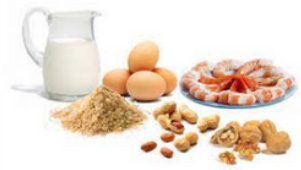

5 mitos sobre alergias e intolerâncias a alimentos
Nem sempre ter sintomas após comer um alimento é sinal de alergia

De acordo com pesquisas recentes, até 35% das pessoas se diagnosticam erroneamente (ou a seus filhos) com uma
intolerância alimentar ou alergia e, em seguida, tentam lidar com isso sozinhas, em vez de procurar
aconselhamento médico adequado.